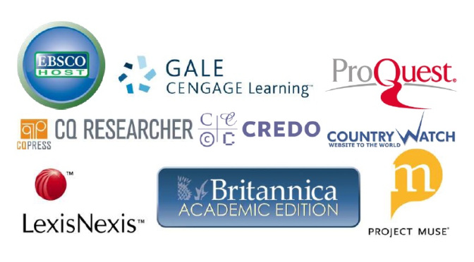
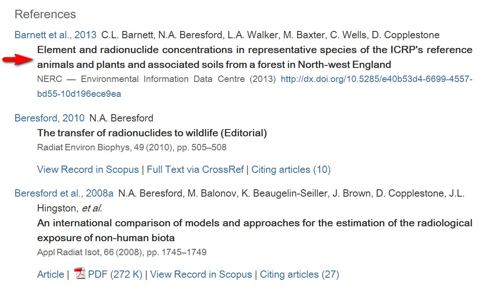
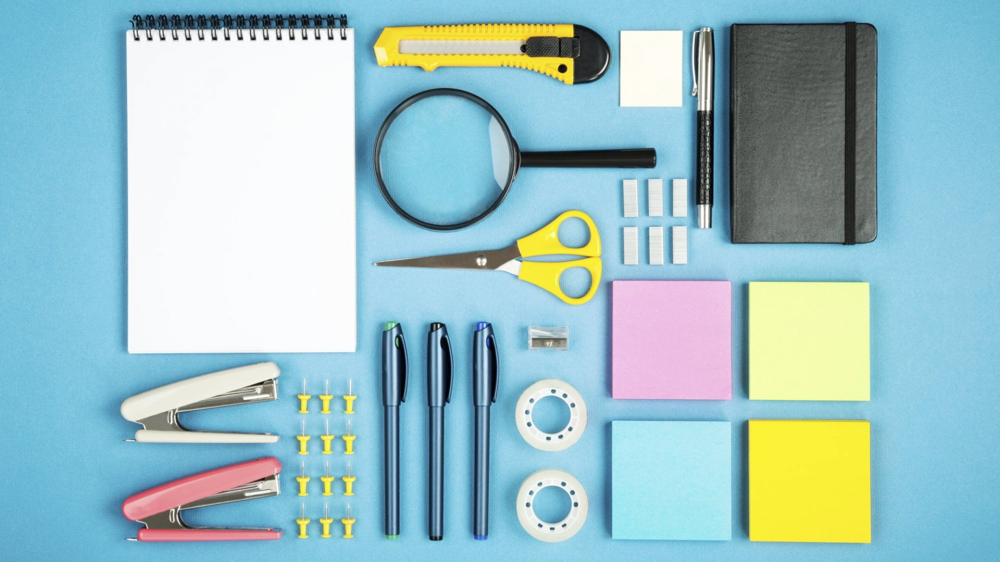

|
Information
|
Researching is a big task and it can be sometimes confusing where to start. Always begin your research with a broad topic. A simple internet search could bring up many great initial references. After getting some initial information and a broad perspective on the subject, jump to the details by looking into more technical sources, like scientific journals if you are researching on a scientific topic.
When gathering information, it's always useful to go from large topics to smaller details. (Image taken from Bitrix24)
Contrary to popular belief, Wikipedia can be a useful tool in research. Although it is true that you shouldn’t fully trust what it is written in Wikipedia, this site has one of the largest collections of topics. With the Funnel Method said in Tip #1, one could use Wikipedia as a reference for initial information, and use the sources stated in it to hop to other much more detailed resources.

Wikipedia - one of the largest public online knowledge database - is a great stepping stone to other references. (Image taken from Bitrix24)
Aside from searching on the World Wide Web (WWW), you can use specific databases to speed-up your research while still making sure you receive valuable information. If you belong to an academic institution, chances are you have access to certain academic databases. For example, PSHS Scholars could freely access numerous papers and articles from ScienceDirect – a site providing a large database of scientific research and journals.
Look into the online resources and databases you could access. (Image taken from Marvins Research)
Credible sources have a bibliography in which they cite the resources they used. If you are trying to find other references, it is best to look into the bibliography of your current source and use it as a stepping stone to other references. You could also learn to use WorldCat, a “world catalog” that contains the bibliographic information for over two billion items.
Similar to Tip #2, you could find more data from the references of your current source. (Image taken from Elsevier)
During research, you will encounter a huge amount of information, may it be in the form of articles, audio, or video. It is a good habit to keep track of all the things you researched, may it be by writing on paper, typing it, or bookmarking sites. It is also highly suggested to take note of all the sources you used while you are researching and not after. This can be easily done by copy-pasting the URL of the website you are using.
Being organized will help streamline your research. (Image taken from Inc.)